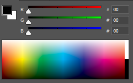
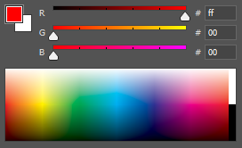

Digital Images
Colour
Colour can be perceived differently by individual to others. This is because we have a spectrum of colours formed by electromagnetic radiation. The human visual system can detect light between the region of 400-700nm.
Tri-Stimulus Theory
This theory states that: "Any colour can be specified by just 3 values; Red, Green and Blue". This relates to how the human eye works with rods, that are used in low light, and cones, which identify colour.
RGB Colour
You can more or less create any colour using a mixture of red, green and blue. They are known as 'additive' primary colours. RGB colour is used where light is being generated, for instance, display equipment like a computer monitor.
CMYK Colour
Stands for Cyan, Magenta, Yellow and Black. (Black is denoted by 'K' to not get confused with 'B' for blue). It is used where light is being replected, like in a painting or print media.
Pixels
Pixels are square-sixed elements that make up display equipment. The word 'Pixel' is made from two parts - Picture (pix) and Elements (els). Each pixel can denote a colour by using reserved channels for RGB. A huge number of pixels join together on a display to create a merged illusion to the user which produces a continuous tone of colour.
Bitmapped vs. Vector Graphics
A table comparing Bitmapped and Vector images
| Bitmapped |
Vector |
| Discrete pixel values |
Mathematical expressions |
| Direct mapping of pixel values |
Computation of pixels using graphics
library |
| Logical pixels > Physical pixels |
Example: 2 co-ordinates is a line |
| Used for complex shapes & patterns |
Used for simple shapes & patterns |
Colour Bit-Depth
In the RGB model, three number sare used to represent a certain colour in the spectrum. Each number is relative to the others, so for instance, there can be more red than blue, equal amounts of all three, no amount of any colour etc.
There are several different bit-depths that can be used:
| 1-bit Black & White |
8-bit Web Safe |
24-bit True Colour |
| Each pixel is 1-bit of memory |
Each pixel is 8-bits of memory |
Each pixel is 24-bits of memory |
| 2 combinations - black/white - newspapers |
256 combinations - multiple colours - basic graphics |
16.8 million combinations! |
Colour Notation
We use notations in order to identify and store a colour's value more easily. For each of red, green and blue, a hexadecimal value is stored.
E.g. White is (255,255,255) which becomes #FFFFFF


Resolution
The word 'resolution' can refer to either the dimensions or the density of an image.
| Pixel Dimensions |
Pixel Density |
- Total number of pixels
- Specified as Width and Height
|
- Number of elements per unit
- Density measured in pixels per inch (e.g. Monitor - 72 ppi)
- Printers & Scanners use dots per inch (e.g. 600 dpi)
|
The output of diplay equipments depends on the pixel density of that device.
Image Manipulation
Vector Manipulation
You can manipulate vector graphics using 'affine transformations'. They include:
- Scaling
- Rotating
- Reflecting
Bitmap Manipulation
You can change the dimensions of a bitmap by:
- changing pixel density
- changing pixel dimensions
Change the pixel dimensions requires you to calculate the new image size. This is known as 'Resampling'.
There are three methods of scaling bitmaps. You can find out more about them here.
File Size Calculations
To calculate how much memory you will need to store a uncompressed image, you can perform the following calculation: Width (W) * Height (H) * Bit-Depth (X)
Compression
If we want to reduce the file size, we can use compression. There are two types:
Lossless
- Data is re-organised
- Requires more memory
Lossy
- Data is discarded
- An approximation of the image remains
- Requires less memory
File Types
File types encode data in different ways. Some examples are: JPEG, GIF, PNG. The extension of a file identifies its file type.